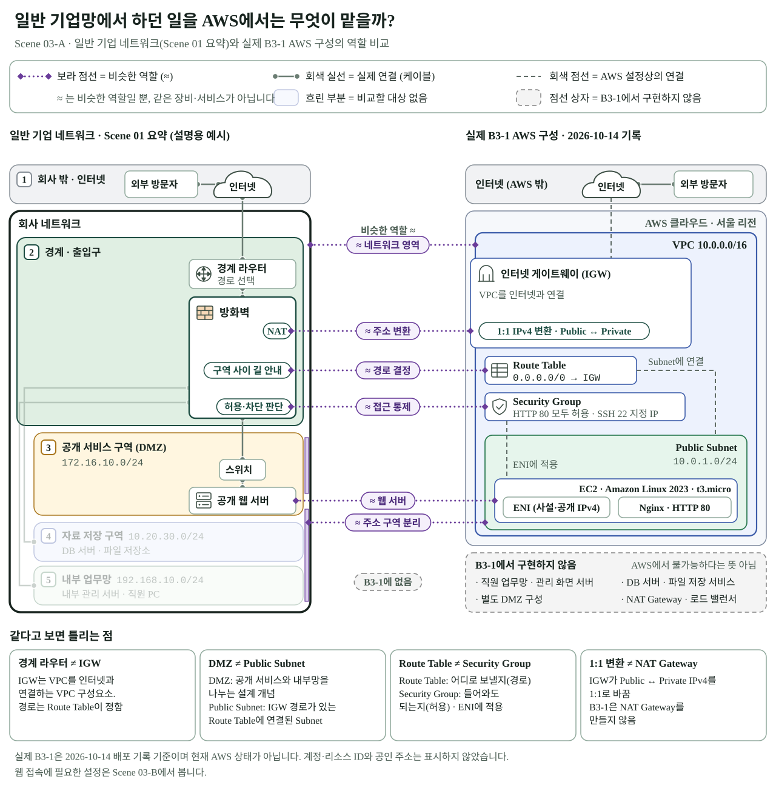
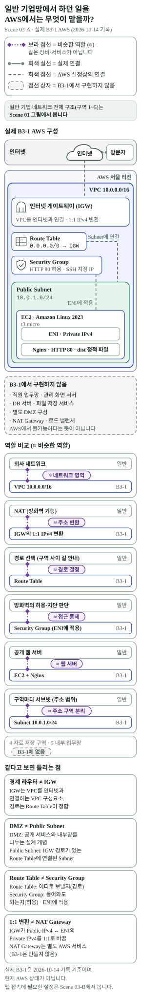
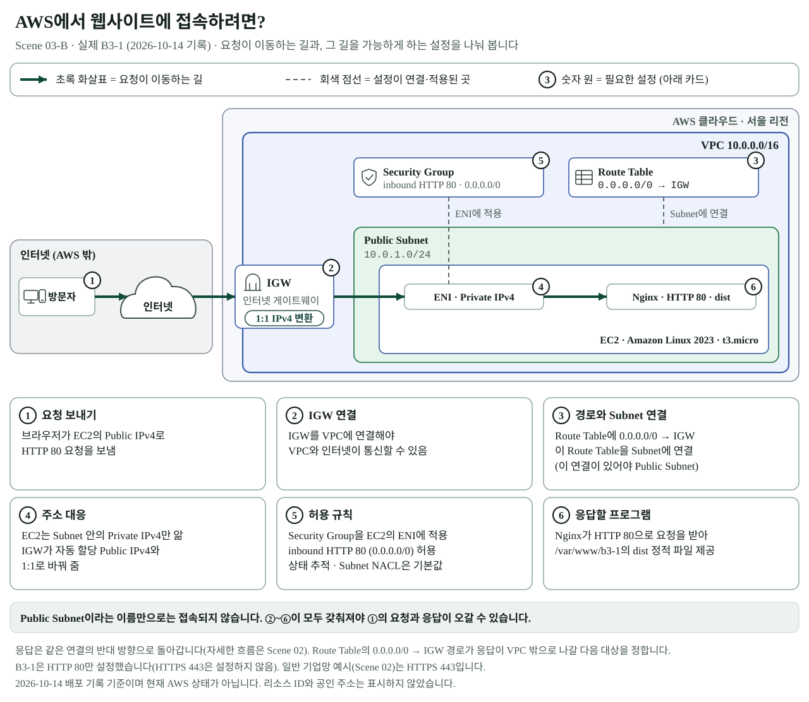
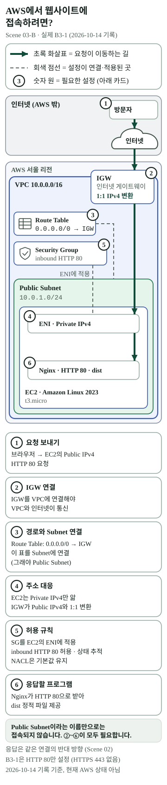
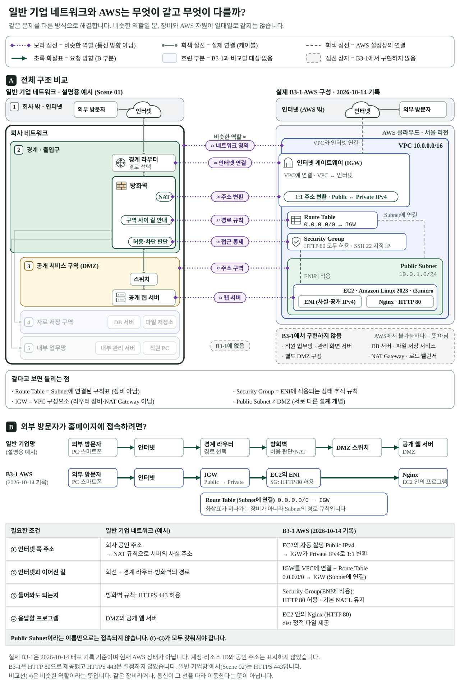
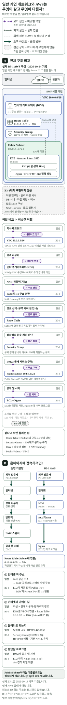

미션 스토리맵 · B3-1 Scene 03 Revision 1 (Owner 검토용)
1차 통합형 시안을 03-A(구조·역할 비교)와 03-B(웹 접속 조건)로 나눴습니다. 서비스에 반영하지 않은 초안이며 원본 SVG를 그대로 표시합니다.
03-A · 일반 기업망에서 하던 일을 AWS에서는 무엇이 맡을까?
노트북용 원래 크기(1280)


노트북용 1000px 폭
휴대전화용 390px · 360px

03-B · AWS에서 웹사이트에 접속하려면?
노트북용 원래 크기(1280)


노트북용 1000px 폭
휴대전화용 390px · 360px

비교 근거: 1차 통합형 시안(da27f68)

